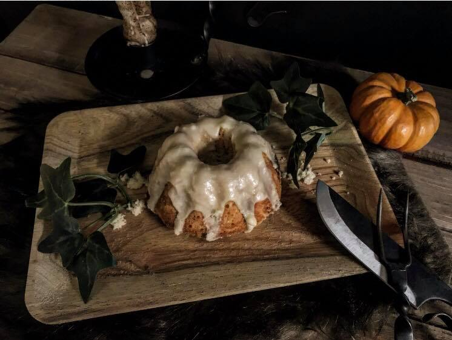

Sweet Rolls

"Let me guess... Someone stole your sweet roll?
A delectable golden brown brioche roll, topped with a rich sugary icing.
Scrumptious enough to make any adventurer fall to his knee.
(Thieves LOVE them!)
This recipe is from Binging with Babish and The Elder Scrolls: Official Cookbook.
Ingredients
- 3 Tbsp butter, melted
- 1 cup whole milk, warm
- 2 tsp honey
- 2 tsp active dry yeast
- 1 large egg
- Kosher salt
- 2 cups all-purpose flour
Frosting Ingredients
- 200 grams confectioner sugar
- 45 grams low fat milk
- Into a large mixing bowl combine 3 tablespoons of melted butter, 1 cup of warm whole milk, 2 tablespoons of honey, 2 teaspoons of active dry yeast, and 1 large egg then whisk together with a pinch of salt.
- Add together with 2 cups of all-purpose flour and mix together until a smooth batter is formed.
- Generously butter the tube cans and spoon the batter inside. Make sure to wipe up any sticky excess. Cover with plastic wrap and rest at room temperature for 30 minutes during which the batter should expand double.
- Remove the plastic wrap and place the cakes onto a rimmed baking sheet and place into a preheated 350°F oven for 15 minutes or until lightly brown and a toothpick inserted in the center comes out clean.
- After letting the cakes cool in the pan for about 5 minutes, remove the cakes from the tube cans and let them completely cool on a wire rack.
- In which time the frosting can be made by mixing together 200 grams of confectioner’s sugar with 45 grams of low-fat milk and whisking together until smooth.
- At which point, generously spoon the frosting on top of the cake and enjoy it.